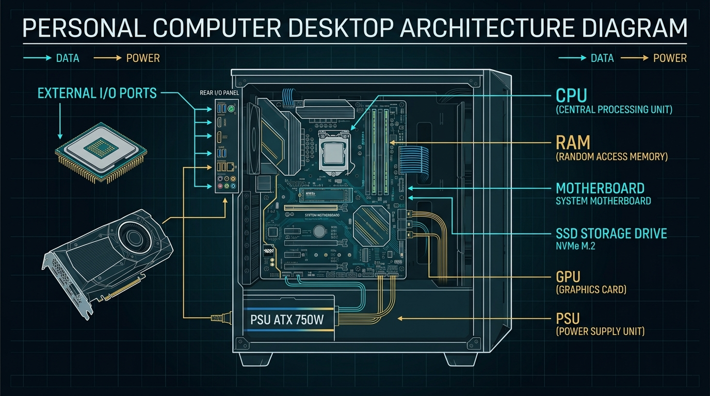
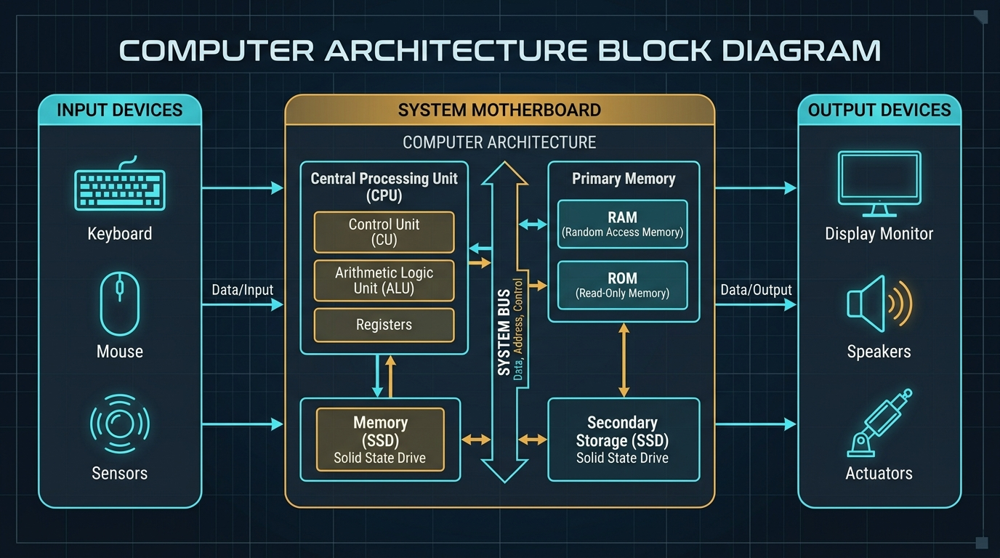
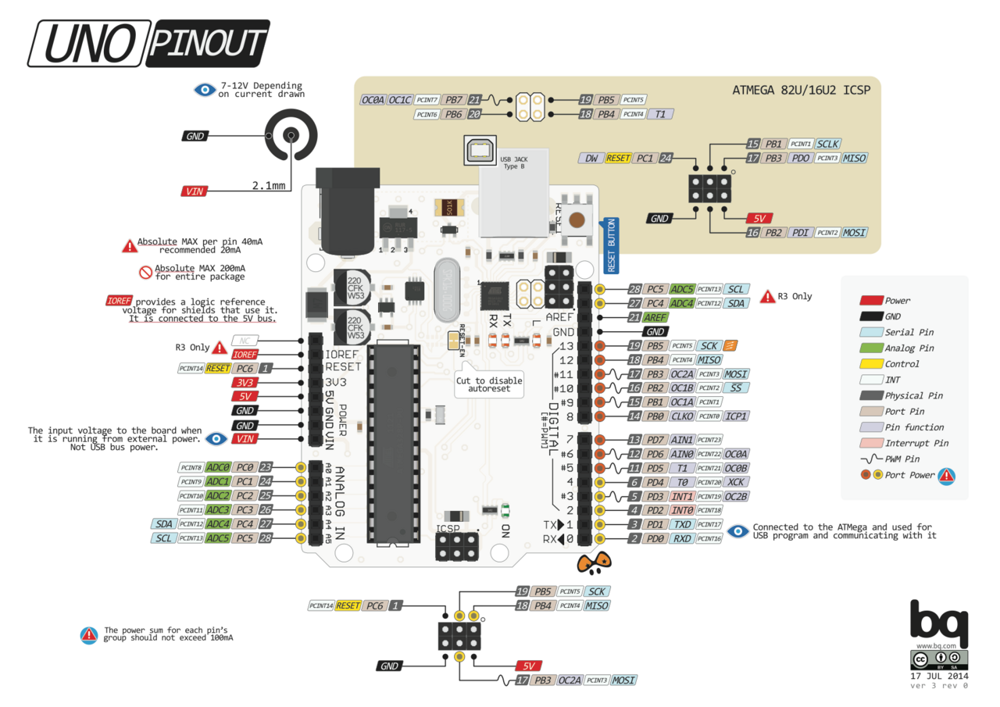

From PC to Embedded Controller
Computer Architecture, the ATmega328P, and the Physical Development Chain
Welcome to Week 2! Today you step into the role of a junior electronics technician. You will discover how a massive desktop computer shrinks into a single silicon chip, dissect the physical Arduino Uno board, and build interactive control circuits.
What You Will Master Today
Identify all main elements of the Arduino Uno system: ATmega328P MCU, 16MHz clock, power regulation, digital GPIO, PWM pins, and analogue inputs.
Explain the precise functions of the processor, internal Flash memory (32KB), SRAM (2KB), EEPROM (1KB), and the PC-to-MCU toolchain.
Design circuits before coding, program digital outputs (LEDs) and digital inputs (pushbuttons with
INPUT_PULLUP), and solve industrial control challenges.
Knowledge, Skills & Behaviours
Industry standards expected of practicing electronics & embedded technicians
- PC vs Microcontroller architecture differences
- ATmega328P memory layout (Flash, SRAM, EEPROM)
- Input → Processing → Output (IPO) model
- Electrical limits (5V logic, 20mA per pin)
- Locate physical subsystems on the Arduino Uno PCB
- Extract parameters from official manufacturer datasheets
- Design circuit schematics prior to programming
- Write structured C++ sketches with
setup()&loop()
- Adhere strictly to electrical safety before applying power
- Verify manufacturer documentation before wiring
- Follow the Predict → Run → Observe → Explain cycle
- Record engineering evidence diligently
Diagnostic Engineering Toolbox
Let's check your foundational electronics & digital concepts through verbal discussion
Can you describe the core difference?
Think about a light switch (ON/OFF) versus a dimmer knob (smooth continuous fading). How do these map
to computer voltages?
What happens if you connect an LED directly to 5V?
Recall Ohm's Law (V = I × R). Without resistance, what happens to the current flowing through the
diode?
Classify these devices: Pushbutton switch, ATmega328P chip, Piezo buzzer, Temperature sensor, Relay.
How much current can an Arduino pin safely deliver?
Is it 20mA, 500mA, or 2 Amperes? Why can't an Arduino pin drive a heavy DC motor directly?
Can You Think of Your PC or Laptop at Home?
What parts do you think it consists of inside the case?

Just like your desktop or laptop at home, a computer system coordinates distinct subsystems:
- CPU (Central Processing Unit): The brain executing instructions.
- RAM (Random Access Memory): Ultra-fast volatile temporary workspace.
- SSD / NVMe Storage: Permanent non-volatile storage for files & OS.
- Motherboard & Bus: High-speed data highways connecting all parts.
- I/O Ports: USB, HDMI, and audio ports for human communication.
Inside the Machine: How Computers Process Data
Watch how the CPU, Clock, and Memory interact during the Fetch-Decode-Execute cycle
- What is the Clock Pulse? Why does the CPU need a rhythmic clock beat to step through instructions?
- What is the Fetch-Decode-Execute cycle? Where does the CPU fetch instructions from?
- Why does the CPU need Registers? How are they different from main RAM?
Input → Processing → Output (IPO) Model
The foundational architecture behind all automated engineering control systems
Industrial Example: Safety Interlock Gate
Input: Switch on Pin 2 detects if safety cage is closed (5V = SAFE).
Processing: ATmega328P evaluates safety logic.
Output: Sets Pin 13 HIGH to energize motor contactor relay.

"Shrinking the Computer": PC vs Microcontroller
What is a microcontroller, and why don't we use desktop PCs inside microwaves or cars?
Microcontrollers are special-purpose computers designed to control a physical process, machine, or electronic circuit directly.
Instead of multiple separate circuit boards for CPU, RAM, and Storage, an entire computer system is integrated into a single silicon chip.
Before we reveal the technical comparison matrix, discuss with your partner:
- How does processor speed compare (Gigahertz vs Megahertz)?
- How does memory scale (Gigabytes vs Kilobytes)?
- Why would a full Windows OS be bad for an emergency brake controller?
- How does power consumption compare (300 Watts vs 0.25 Watts)?
PC vs Microcontroller: Comparison Breakdown
Comparing general-purpose computers with dedicated embedded controllers
| Subsystem | Personal Computer (PC) | Arduino Uno (ATmega328P) | Comparison / Why the Difference? |
|---|---|---|---|
| Processor | Multi-core x86/ARM (3+ GHz) | 8-bit AVR RISC (16 MHz) | Embedded tasks only require lightweight, real-time control logic. |
| Software Layer | Full OS (Windows, Linux, macOS) | Bare-Metal Firmware (Loop) | Zero OS overhead = instant cycle-accurate, deterministic response. |
| Program Storage | SSD / NVMe (512 GB – 2 TB) | Internal Flash (32 KB total) | Microcontroller code compiles to compact raw machine instructions. |
| Working Memory | RAM (8 GB – 32 GB) | Internal SRAM (2 KB) | Holds runtime variables directly on the MCU die without external buses. |
| Direct I/O Pins | Standardized ports (USB, PCIe) | 14 Digital I/O, 6 Analogue In | Direct memory-mapped control of physical voltages (0V / 5V). |
| Power Draw | 65 W – 400 W (Mains AC) | ~0.25 W (50 mA @ 5V DC) | Enables battery operation and sealed, low-heat industrial enclosures. |
Interactive Arduino Uno Rev3 Board Anatomy
Click the numbered hotspots to inspect each physical subsystem on the board

ATmega328P Microcontroller
The brain of the board: an 8-bit AVR RISC microcontroller executing instructions at 16 MHz. Houses 32KB Flash (program storage), 2KB SRAM (variables), and 1KB EEPROM (non-volatile settings).
Arduino Uno Rev3 Pinout Architecture
Detailed mapping of digital GPIO, PWM channels (~), analogue inputs, and power rails

pinMode() as INPUT or OUTPUT. Pins 0 (RX) and 1 (TX) handle hardware serial.
analogWrite() for motor speed and LED dimming.Official Datasheet & Tech Specs Scavenger Hunt
Use the official manufacturer documentation to verify hardware limits
- What is the total Flash memory on the ATmega328P?
- What is the size of SRAM working memory?
- What is the recommended input voltage via the Barrel Jack / VIN?
- What is the clock speed set by the crystal oscillator?
Applying overvoltage (e.g. 24V into VIN or 12V directly into a 5V pin) will instantly destroy the microcontroller. Always confirm voltage thresholds before connecting any power supply!
Design Before Code: LED Output Circuit
Always design and draw the physical circuit schematic before writing firmware
Before writing digitalWrite(), draw the circuit loop:
- Anode (+ longer leg): Connects to Digital Pin 13.
- Resistor (220Ω): In series to limit current: I = (5V - 2V) / 220Ω ≈ 13.6 mA.
- Cathode (- shorter flat leg): Returns to Arduino GND.
On your paper workbook or in Section 5 of the Microsoft Form, sketch the schematic diagram using standard symbols:
Arduino Execution Model: setup() vs loop()
Understanding the microcontroller startup lifecycle and continuous execution engine
• Configures hardware pin modes (
pinMode)• Initializes Serial communication & sensor calibration
• Polls input sensors (
digitalRead)• Executes decision logic & drives outputs (
digitalWrite)
If you put pin configuration inside loop(), the MCU needlessly reconfigures hardware
registers millions of times per second. Keep initialization in setup()!
Unlike a desktop C++ main() function that returns 0 and exits to the OS, an embedded
microcontroller has no OS to return to. loop() runs continuously until power is
removed.
int main(void) { init(); setup(); for(;;) { loop(); } }
setup() prepares and initializes the hardware once;
loop() controls the real-time continuous operation forever.
Digital Output: digitalWrite() & delay()
Driving voltage levels to actuators and timing microcontroller execution
digitalWrite(pin, value) Reference ↗
delay(milliseconds) Reference ↗
void loop() {
digitalWrite(13, HIGH); delay(1000);
digitalWrite(13, LOW); delay(1000);
}
HIGH applies 5.0V to illuminate the LED, while
LOW connects the pin to 0.0V Ground to turn it off.
Design Before Code: Pushbutton & INPUT_PULLUP
Why do floating pins cause random false triggers, and how does internal pull-up solve it?
INPUT_PULLUP?An unconnected digital input pin is floating—it acts like an antenna picking up electromagnetic noise and flipping randomly between 0V and 5V.
pinMode(2, INPUT_PULLUP) connects an internal 20kΩ–50kΩ resistor to
5V.
- Button Released: Internal resistor pulls pin safely to HIGH (5V).
- Button Pressed: Switch shorts pin to GND → reads LOW (0V).
pinMode(pin, mode) Reference ↗
INPUT: High impedance state (for external circuits with pull-down resistors).INPUT_PULLUP: Activates internal 5V pull-up (active-LOW pushbutton).OUTPUT: Low impedance state (drives 0V or 5V to LEDs/relays).
INPUT_PULLUP saves breadboard space and component cost
by eliminating the need for an external physical resistor!
Digital Input: Controlling LED with a Pushbutton
Reading sensor binary logic states with digitalRead() and conditional
branching
const int LED_PIN = 13;
void setup() {
pinMode(LED_PIN, OUTPUT);
pinMode(BUTTON_PIN, INPUT_PULLUP); // Active-LOW
}
void loop() {
int state = digitalRead(BUTTON_PIN);
if (state == LOW) { // Pressed
digitalWrite(LED_PIN, HIGH);
} else {
digitalWrite(LED_PIN, LOW);
}
}
Design Before Code: Dual-Button Industrial Station
Planning pin assignments and schematic routing for a machine Start/Stop control console
You are tasked with building a manufacturing Start/Stop station with dual status indicators:
- Start Button: Digital Pin 2 → Switch to GND (INPUT_PULLUP)
- Stop Button: Digital Pin 3 → Switch to GND (INPUT_PULLUP)
- Green RUN LED: Digital Pin 12 → 220Ω Resistor → GND
- Red HALT LED: Digital Pin 13 → 220Ω Resistor → GND
Before writing the code logic on the next slide, verify your circuit schematic has:
- Both pushbuttons sharing the common Arduino GND rail.
- Independent series current-limiting resistors on both LEDs.
- Zero overlapping pins or short circuits.
Stretch & Challenge: Dual-Button & Dual-LED System
Engineering an industrial Start / Stop station: Button 1 & Button 2 controlling Green & Red LEDs
const int LED_RUN = 12; const int LED_HALT = 13;
void loop() {
if (digitalRead(BTN_START) == LOW) {
digitalWrite(LED_RUN, HIGH); // RUNNING
digitalWrite(LED_HALT, LOW);
}
if (digitalRead(BTN_STOP) == LOW) {
digitalWrite(LED_RUN, LOW);
digitalWrite(LED_HALT, HIGH); // HALTED
}
}
Plenary & Reflection
Ensure all evidence is recorded in your portfolio before concluding the laboratory session
- What is the exact execution difference between
setup()andloop()? - How does
digitalWrite(13, HIGH)physically change the pin voltage? - Why is
INPUT_PULLUPused when connecting pushbuttons? - State the Flash memory and SRAM capacity of the ATmega328P.
Submit your responses directly via the Microsoft Forms drawer or export your evidence portfolio.